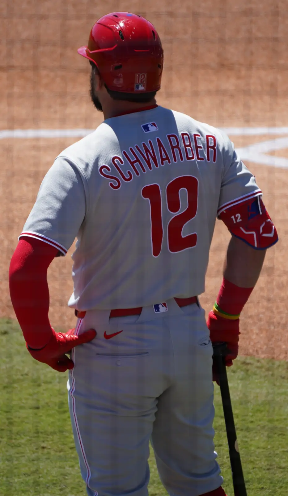
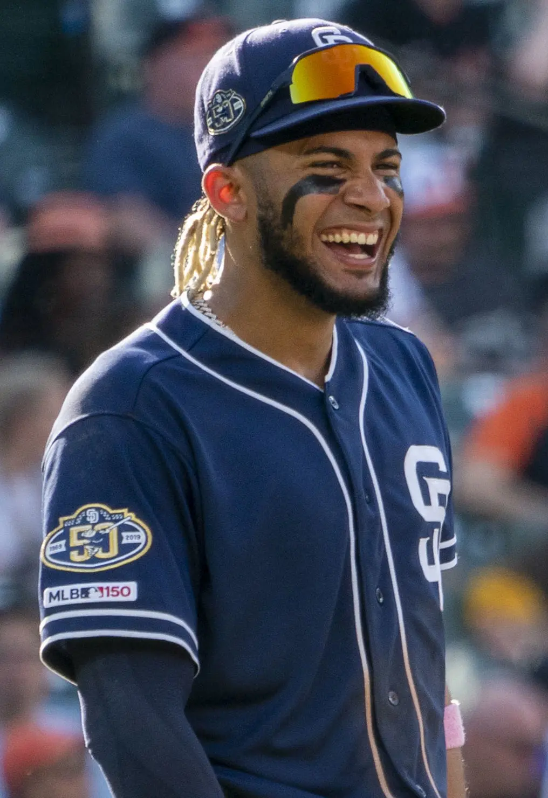

YESTERDAY'S BIGGEST STORIESARCHIVE 01

01 · COMEBACK OF THE DAY아웃 하나면 끝.
아웃 하나면 끝.
필라델피아는 거기서 6점을 냈다.
PHI 6–4 STL · Kyle Schwarber walk-off comeback story.

02 · PLAYER OF THE DAY4안타, 2홈런, 4타점.
4안타, 2홈런, 4타점.
타티스의 파워는 완전히 돌아왔다.
SD 8–1 MIN · Fernando Tatis Jr. multi-homer performance.